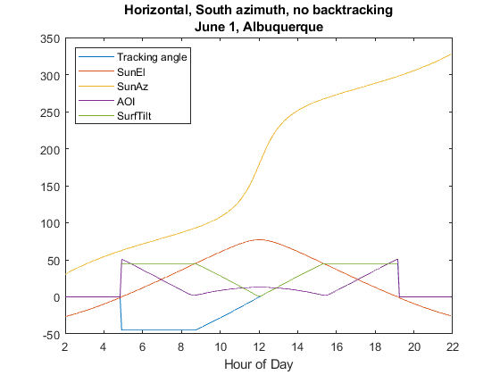
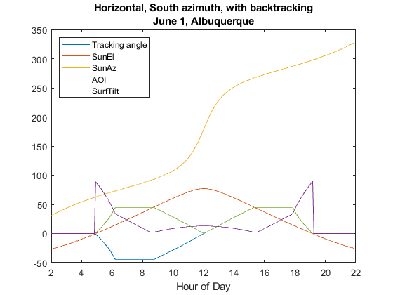
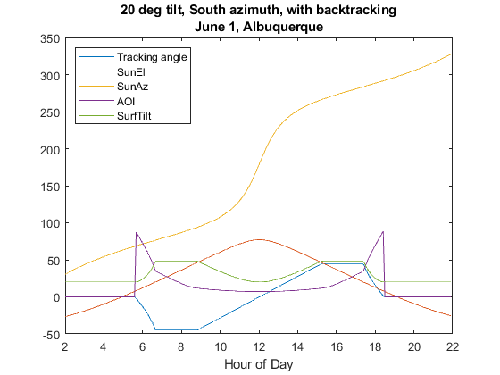

pvl_singleaxis
Determine the rotation angle of a 1 axis tracker, and sun incident angle on the tracked surface.
Contents
Syntax
[TrkrTheta, AOI, SurfTilt, SurfAz]= pvl_singleaxis(SunZen, SunAz, Latitude, AxisTilt, AxisAzimuth, MaxAngle)
[TrkrTheta, AOI, SurfTilt, SurfAz]= pvl_singleaxis(SunZen, SunAz, Latitude, AxisTilt, AxisAzimuth, MaxAngle, Backtrack)
[TrkrTheta, AOI, SurfTilt, SurfAz]= pvl_singleaxis(SunZen, SunAz, Latitude, AxisTilt, AxisAzimuth, MaxAngle, Backtrack, GCR)
Description
Determine the rotation angle of a single axis tracker using the equations in [1]. Backtracking may be specified, and if so, a ground coverage ratio is required.
Rotation angle is determined in a module-oriented coordinate system. The tracker azimuth AxisAzimuth defines the positive y-axis; the positive x-axis is 90 degress clockwise from the y-axis and parallel to the earth surface, and the positive z-axis is normal and oriented towards the sun. Rotation angle TrkrTheta indicates tracker position relative to horizontal: TrkrTheta = 0 is horizontal, and positive TrkrTheta is a clockwise rotation around the y axis in the x, y, z coordinate system. For example, if tracker azimuth AxisAzimuth is 180 (oriented south), TrkrTheta = 30 is a rotation of 30 degrees towards the west, and TrkrTheta = -90 is a rotation to the vertical plane facing east.
Inputs
- SunZen - a scalar or vector of apparent (refraction-corrected) zenith angles in decimal degrees. If SunZen is a vector it must be of the same size as all other vector inputs. SunZen must be >=0 and <=180.
- SunAz - a scalar or vector of sun azimuth angles in decimal degrees. If SunAz is a vector it must be of the same size as all other vector inputs. SunAz must be >=0 and <=360. The azimuth convention is defined as degrees East of North (e.g. North = 0, East = 90, West = 270).
- Latitude - a scalar value indicating northern or southern hemisphere. A positive or zero value specifies the northern hemisphere, and a negative value denotes the southern hemisphere. The exact latitude is NOT required.
- AxisTilt - a scalar value denoting the tilt of the axis of rotation (i.e, the y-axis defined by AxisAzimuth) in decimal degrees. Tilt is defined with respect to horizontal (AxisTilt = 0) by elevating the initial point of a vector along the axis of tracker rotation in the direction specified by AxisAzimuth. AxisTilt must be >=0 and <=180.
- AxisAzimuth - a scalar value denoting the compass direction along which the axis of rotation lies, in decimal degrees. Again, the convention is defined as degrees East of North (e.g. North = 0, East = 90, West = 270). AxisAzimuth must be >=0 and <=360.
- MaxAngle - a scalar value denoting the maximum rotation angle, in decimal degrees, of the tracker from its 'horizontal' position (which is horizontal relative to the ground if AxisTilt = 0). MaxAngle must be <=180 and >=0. MaxAngle = 90 degrees allows the tracker to rotate to a vertical position to point towards a horizon. MaxAngle = 180 degrees allows for full rotation.
- Backtrack - a scalar value denoting whether the tracker employs "backtracking", i.e., rotating away from the sun, to avoid row-to-row shading. Backtrack = 0 denotes no backtracking. Any other value indicates backtracking. If Backtrack is not provided, the default value is 0 (no backtracking).
- GCR - a scalar value denoting the ground coverage ratio of a tracker system which utilizes backtracking; i.e. the ratio between the PV array surface area to total ground area. A tracker system with modules 2 meters wide, centered on the tracking axis, with 6 meters between the tracking axes has a GCR of 2/6=0.333. If GCR is not provided, a GCR of 2/7 is default. GCR must be <=1.
Outputs
- TrkrTheta - The rotation angle (Theta) of the tracker. TrkrTheta = 0 is horizontal, and positive rotation angles are clockwise.
- AOI - The angle-of-incidence of direct irradiance onto the rotated tracker surface.
- SurfTilt - The tilt angle between the tracker surface and the earth surface, accounting for tracker rotation.
- SurfAz - The azimuth of the rotated tracker face, determined by projecting the vector normal to the tracker's face to the earth's surface.
Example 1
Horizontal single axis tracking without back-tracking (max angle = 45 deg)
MATLABDatenum=datenum('1-Jun-2011 02:00:00'):1/(24*60/5):datenum('1-Jun-2011 21:59:59'); % times at 5 minute intervals Time = pvl_maketimestruct(MATLABDatenum,-7); dH = Time.hour+Time.minute/60+Time.second/3600; Location = pvl_makelocationstruct(35, -106, 0); [SunAz, SunEl, ApparentSunEl, ~]=pvl_ephemeris(Time, Location); [TrkrTheta, AOI, SurfTilt, SurfAz] = pvl_singleaxis(90-ApparentSunEl, SunAz, Location.latitude, 0, 180, 45); figure plot(dH,TrkrTheta, '-') %tracking angle hold all plot(dH, ApparentSunEl, '-') %sun elevation plot(dH, SunAz, '-') plot(dH, AOI, '-') plot(dH,SurfTilt, '-') xlabel('Hour of Day') title({'Horizontal, South azimuth, no backtracking';'June 1, Albuquerque'}); l1=legend('Tracking angle', 'SunEl', 'SunAz', 'AOI','SurfTilt','Location','NorthWest');
Example 2
Horizontal single axis tracking with back-tracking (assumes GCR of 0.3)
MATLABDatenum=datenum('1-Jun-2011 02:00:00'):1/(24*60/5):datenum('1-Jun-2011 21:59:59'); % times at 5 minute intervals Time = pvl_maketimestruct(MATLABDatenum,-7); dH = Time.hour+Time.minute/60+Time.second/3600; Location = pvl_makelocationstruct(35, -106, 0); [SunAz, SunEl, ApparentSunEl, ~]=pvl_ephemeris(Time, Location); [TrkrTheta, AOI, SurfTilt, SurfAz] = pvl_singleaxis(90-ApparentSunEl, SunAz, Location.latitude, 0, 180, 45, 1, 0.3); figure plot(dH,TrkrTheta, '-') %tracking angle hold all plot(dH, ApparentSunEl, '-') %sun elevation plot(dH, SunAz, '-') plot(dH, AOI, '-') plot(dH,SurfTilt, '-') xlabel('Hour of Day') title({'Horizontal, South azimuth, with backtracking';'June 1, Albuquerque'}); legend('Tracking angle', 'SunEl', 'SunAz', 'AOI','SurfTilt','Location','NorthWest')
Example 3
20 deg titled single axis tracking with back-tracking (assumes GCR of 0.3)
MATLABDatenum=datenum('1-Jun-2011 02:00:00'):1/(24*60/5):datenum('1-Jun-2011 21:59:59'); % times at 5 minute intervals Time = pvl_maketimestruct(MATLABDatenum,-7); dH = Time.hour+Time.minute/60+Time.second/3600; Location = pvl_makelocationstruct(35, -106, 0); [SunAz, SunEl, ApparentSunEl, SolarTime]=pvl_ephemeris(Time, Location); [TrkrTheta, AOI, SurfTilt, SurfAz] = pvl_singleaxis(90-ApparentSunEl, SunAz, Location.latitude, 20, 180, 45, 1, 0.3); figure plot(dH,TrkrTheta, '-') %tracking angle hold all plot(dH, ApparentSunEl, '-') %sun elevation plot(dH, SunAz, '-') plot(dH, AOI, '-') plot(dH,SurfTilt, '-') xlabel('Hour of Day') title({'20 deg tilt, South azimuth, with backtracking';'June 1, Albuquerque'}); legend('Tracking angle', 'SunEl', 'SunAz', 'AOI','SurfTilt','Location','NorthWest')
References
[1] Lorenzo, E et al., 2011, Tracking and back-tracking, Prog. in Photovoltaics: Research and Applications, v. 19, pp. 747-753.
See Also
pvl_ephemeris , pvl_spa, pvl_getaoi
Copyright 2014 Sandia National Laboratories